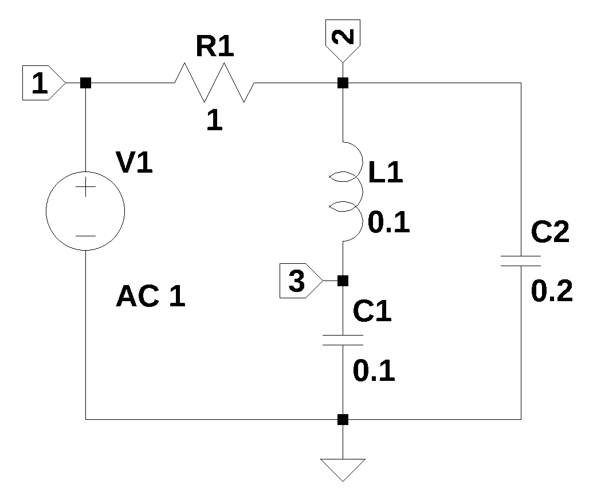

import sys
from IPython.display import display, Markdown, Math, Latex
from sympy import *
from scipy import signal
import matplotlib.pyplot as plt
import numpy as np
import SymMNA
init_printing()1 Introduction
Circuit analysis and theory are fundamental to electrical engineering and is usually one of the first topics taught to electrical engineering students. The purpose of this book is to describe a circuit analysis method called Modified Nodal Analysis (MNA) implemented in Python and using the SymPy library. The Python programming language along with its packages and libraries provide powerful computational tools that make solving math problems extremely easy with just a few lines of code. SymPy and NumPy are the main libraries used to perform the types of circuit analysis problems described in this book.
Symbolic Modified Nodal Analysis circuit analysis offers an alternative way to analyze electric circuits since the results are analytic expressions that describe the functionality of the circuit in terms of the circuit variables. The analytic expressions can, but not always, offer some insight into the behavior of the circuit.
In this chapter, as well as in the remainder of this book, the following Python libraries are used.
The sys module provides access to some variables used or maintained by the interpreter and to functions that interact strongly with the interpreter. IPython.display is a public API for display tools in IPython. SymPy is a Python library for symbolic mathematics. SciPy is a collection of algorithms for scientific computing. Matplotlib is a comprehensive library for creating static, animated, and interactive visualizations in Python. NumPy is a package for scientific computing with Python. The function SymMNA is described in Chapter 4. The function init_printing() will automatically enable the best printer available in the Python environment.
Consider the example circuit shown in Figure 1.1. This circuit has five branches and three nodes. There is a voltage source \(V_1\), which drives the circuit and each of the nodes is labeled along with the ground node.

For this circuit, the MNA code generates the following system of equations:
\(I_{V1} + \frac{v_{1}}{R_{1}} - \frac{v_{2}}{R_{1}} = 0\)
\(I_{L1} + v_{2} \left(C_{2} s + \frac{1}{R_{1}}\right) - \frac{v_{1}}{R_{1}} = 0\)
\(C_{1} s v_{3} - I_{L1} = 0\)
\(v_{1} = V_{1}\)
\(- I_{L1} L_{1} s + v_{2} - v_{3} = 0\)
where, \(s\) is the Laplace variable, \(C_1\) and \(C_2\) are capacitors, \(R_1\) is a resistor, \(L_1\) is an inductor, \(v_1\), \(v_2\) and \(v_3\) are the unknown node voltages, \(V_1\) is the input voltage source, \(I_{V1}\) is the unknown current flowing through \(V_1\) and \(I_{L1}\) is the unknown current flowing in \(L_1\). These equations can be easily solved by SymPy to obtain the unknown voltages and currents as analytic expressions.
\(v_{1} = V_{1}\)
\(v_{2} = \frac{C_{1} L_{1} V_{1} s^{2} + V_{1}}{C_{1} C_{2} L_{1} R_{1} s^{3} + C_{1} L_{1} s^{2} + C_{1} R_{1} s + C_{2} R_{1} s + 1}\)
\(v_{3} = \frac{V_{1}}{C_{1} C_{2} L_{1} R_{1} s^{3} + C_{1} L_{1} s^{2} + C_{1} R_{1} s + C_{2} R_{1} s + 1}\)
\(I_{V1} = \frac{- C_{1} C_{2} L_{1} V_{1} s^{3} - C_{1} V_{1} s - C_{2} V_{1} s}{C_{1} C_{2} L_{1} R_{1} s^{3} + C_{1} L_{1} s^{2} + C_{1} R_{1} s + C_{2} R_{1} s + 1}\)
\(I_{L1} = \frac{C_{1} V_{1} s}{C_{1} C_{2} L_{1} R_{1} s^{3} + C_{1} L_{1} s^{2} + C_{1} R_{1} s + C_{2} R_{1} s + 1}\)
Once the network equations are solved, SymPy can be used to obtain the analytic expression for a transfer function, since manipulation of equations is very easy. For example, SymPy can be used to the find the symbolic form of the impedance of the circuit as seen from the terminal of \(V_1\), \(Z(s)=\frac {v_1}{I_{V1}}\), which is:
\(\displaystyle \frac{C_{1} C_{2} L_{1} R_{1} s^{3} + C_{1} L_{1} s^{2} + C_{1} R_{1} s + C_{2} R_{1} s + 1}{s \left(C_{1} C_{2} L_{1} s^{2} + C_{1} + C_{2}\right)}\)
The numerator and denominator of \(Z(s)\) can be extracted. The numerator is:
\(\displaystyle C_{1} C_{2} L_{1} R_{1} s^{3} + C_{1} L_{1} s^{2} + C_{1} R_{1} s + C_{2} R_{1} s + 1\)
The denominator is:
\(\displaystyle s \left(C_{1} C_{2} L_{1} s^{2} + C_{1} + C_{2}\right)\)
SymPy can easily solve for the roots of the numerator and denominator. Since the numerator is a third order expression, the analytic solution is a bit long. Quarto will insert a slider bar for expressions wider than the text display width.
\(\displaystyle - \frac{\frac{1}{C_{2}^{2} R_{1}^{2}} - \frac{3 \left(C_{1} + C_{2}\right)}{C_{1} C_{2} L_{1}}}{3 \sqrt[3]{\frac{\sqrt{- 4 \left(\frac{1}{C_{2}^{2} R_{1}^{2}} - \frac{3 \left(C_{1} + C_{2}\right)}{C_{1} C_{2} L_{1}}\right)^{3} + \left(\frac{2}{C_{2}^{3} R_{1}^{3}} + \frac{27}{C_{1} C_{2} L_{1} R_{1}} - \frac{9 \left(C_{1} + C_{2}\right)}{C_{1} C_{2}^{2} L_{1} R_{1}}\right)^{2}}}{2} + \frac{1}{C_{2}^{3} R_{1}^{3}} + \frac{27}{2 C_{1} C_{2} L_{1} R_{1}} - \frac{9 \left(C_{1} + C_{2}\right)}{2 C_{1} C_{2}^{2} L_{1} R_{1}}}} - \frac{\sqrt[3]{\frac{\sqrt{- 4 \left(\frac{1}{C_{2}^{2} R_{1}^{2}} - \frac{3 \left(C_{1} + C_{2}\right)}{C_{1} C_{2} L_{1}}\right)^{3} + \left(\frac{2}{C_{2}^{3} R_{1}^{3}} + \frac{27}{C_{1} C_{2} L_{1} R_{1}} - \frac{9 \left(C_{1} + C_{2}\right)}{C_{1} C_{2}^{2} L_{1} R_{1}}\right)^{2}}}{2} + \frac{1}{C_{2}^{3} R_{1}^{3}} + \frac{27}{2 C_{1} C_{2} L_{1} R_{1}} - \frac{9 \left(C_{1} + C_{2}\right)}{2 C_{1} C_{2}^{2} L_{1} R_{1}}}}{3} - \frac{1}{3 C_{2} R_{1}}\)
\(\displaystyle - \frac{\frac{1}{C_{2}^{2} R_{1}^{2}} - \frac{3 \left(C_{1} + C_{2}\right)}{C_{1} C_{2} L_{1}}}{3 \left(- \frac{1}{2} - \frac{\sqrt{3} i}{2}\right) \sqrt[3]{\frac{\sqrt{- 4 \left(\frac{1}{C_{2}^{2} R_{1}^{2}} - \frac{3 \left(C_{1} + C_{2}\right)}{C_{1} C_{2} L_{1}}\right)^{3} + \left(\frac{2}{C_{2}^{3} R_{1}^{3}} + \frac{27}{C_{1} C_{2} L_{1} R_{1}} - \frac{9 \left(C_{1} + C_{2}\right)}{C_{1} C_{2}^{2} L_{1} R_{1}}\right)^{2}}}{2} + \frac{1}{C_{2}^{3} R_{1}^{3}} + \frac{27}{2 C_{1} C_{2} L_{1} R_{1}} - \frac{9 \left(C_{1} + C_{2}\right)}{2 C_{1} C_{2}^{2} L_{1} R_{1}}}} - \frac{\left(- \frac{1}{2} - \frac{\sqrt{3} i}{2}\right) \sqrt[3]{\frac{\sqrt{- 4 \left(\frac{1}{C_{2}^{2} R_{1}^{2}} - \frac{3 \left(C_{1} + C_{2}\right)}{C_{1} C_{2} L_{1}}\right)^{3} + \left(\frac{2}{C_{2}^{3} R_{1}^{3}} + \frac{27}{C_{1} C_{2} L_{1} R_{1}} - \frac{9 \left(C_{1} + C_{2}\right)}{C_{1} C_{2}^{2} L_{1} R_{1}}\right)^{2}}}{2} + \frac{1}{C_{2}^{3} R_{1}^{3}} + \frac{27}{2 C_{1} C_{2} L_{1} R_{1}} - \frac{9 \left(C_{1} + C_{2}\right)}{2 C_{1} C_{2}^{2} L_{1} R_{1}}}}{3} - \frac{1}{3 C_{2} R_{1}}\)
\(\displaystyle - \frac{\frac{1}{C_{2}^{2} R_{1}^{2}} - \frac{3 \left(C_{1} + C_{2}\right)}{C_{1} C_{2} L_{1}}}{3 \left(- \frac{1}{2} + \frac{\sqrt{3} i}{2}\right) \sqrt[3]{\frac{\sqrt{- 4 \left(\frac{1}{C_{2}^{2} R_{1}^{2}} - \frac{3 \left(C_{1} + C_{2}\right)}{C_{1} C_{2} L_{1}}\right)^{3} + \left(\frac{2}{C_{2}^{3} R_{1}^{3}} + \frac{27}{C_{1} C_{2} L_{1} R_{1}} - \frac{9 \left(C_{1} + C_{2}\right)}{C_{1} C_{2}^{2} L_{1} R_{1}}\right)^{2}}}{2} + \frac{1}{C_{2}^{3} R_{1}^{3}} + \frac{27}{2 C_{1} C_{2} L_{1} R_{1}} - \frac{9 \left(C_{1} + C_{2}\right)}{2 C_{1} C_{2}^{2} L_{1} R_{1}}}} - \frac{\left(- \frac{1}{2} + \frac{\sqrt{3} i}{2}\right) \sqrt[3]{\frac{\sqrt{- 4 \left(\frac{1}{C_{2}^{2} R_{1}^{2}} - \frac{3 \left(C_{1} + C_{2}\right)}{C_{1} C_{2} L_{1}}\right)^{3} + \left(\frac{2}{C_{2}^{3} R_{1}^{3}} + \frac{27}{C_{1} C_{2} L_{1} R_{1}} - \frac{9 \left(C_{1} + C_{2}\right)}{C_{1} C_{2}^{2} L_{1} R_{1}}\right)^{2}}}{2} + \frac{1}{C_{2}^{3} R_{1}^{3}} + \frac{27}{2 C_{1} C_{2} L_{1} R_{1}} - \frac{9 \left(C_{1} + C_{2}\right)}{2 C_{1} C_{2}^{2} L_{1} R_{1}}}}{3} - \frac{1}{3 C_{2} R_{1}}\)
The are three zeros in the impedance function and from the expressions above, we can see what components are influencing the zeros. However, as you can see, these expressions are long and complex. It’s difficult to imagine what insights can be obtained from these analytic expressions.
The roots of the denominator are:
\(\displaystyle \sqrt{\frac{- C_{1} - C_{2}}{C_{1} C_{2} L_{1}}}\)
\(\displaystyle - \sqrt{- \frac{C_{1} + C_{2}}{C_{1} C_{2} L_{1}}}\)
Matrix and polynomial math can be performed with hardly any effort with the help of SymPy. For some high order polynomials, SymPy does have trouble finding the symbolic roots. The code used to perform the calculations above and display the results is embedded in this markdown document, but is hidden from display. The code can be examined by looking at the original markdown document for this chapter or the example and validation chapters later in this book.
1.1 JupyterLab
All the validation and example problem circuits are presented in JupyterLab notebooks and rendered into chapters by Quarto.
Variable names
I’ve tried to be consistent with the use of variable names throughout the Jupyter notebooks. Resistors, capacitors and inductors use R, L and C as reference designators. The names chosen for the other variables are listed in Table 1.1
| Variable name | definition |
|---|---|
| NE_sym | Network equations, symbolic |
| NE | Network equations with component values |
| NE_dc | Network equations with \(s=0\) |
| NE_w1 | Network equations with \(s=j \omega\) and \(\omega\) equal to a numeric value |
| U_sym | The solution to the symbolic network equations |
| U | The solution to network equations with component values |
| U_ac | The solution to network equations at some frequency |
| H_sym | system transfer function, symbolic |
| H | System transfer function with component values |
| \(V_1, V_2,\) … | Capital letter V for independent voltage sources |
| \(v_1, v_2,\) … | Small letter v for the node voltages |
| \(I_1, I_2,\) … | Capital letter I for independent current sources |
| \(R_1, R_2,\) … | Capital letter R for resistors |
| \(L_1, L_2,\) … | Capital letter L for inductors |
| \(C_1, C_2,\) … | Capital letter C for capacitors |
| \(E_1, E_2,\) … | Voltage controlled voltage source (VCVS) |
| \(F_1, F_2,\) … | Current controlled current source (CCCS) |
| \(G_1, G_2,\) … | Voltage controlled current source (VCCS) |
| \(H_1, H_2,\) … | Current controlled voltage source (CCVS) |
| \(K_1, K_2,\) … | Inductor coupling coefficients |
| \(M_1, M_2,\) … | Mutual inductance |
| \(O_1, O_2,\) … | Op Amp components |
| A | Connectivity matrix |
| X | Unknown voltages and currents vector |
| Z | Known voltages and currents vector |
Expressions generated by SymPy that have imaginary quantities will use \(i\) for the imaginary number. Typically, electrical engineers will use \(j\) for the imaginary number since \(i\) is the variable used for electrical current. Depending on who generates the equation, either \(i\) or \(j\) might be used and the reader should short these out based on context. Usually, the variables used for current have a number, e.g. \(i_1\) or \(i_2\) and a lone \(i\) would be the imaginary number.
Large exponents
The values of the exponents can be very large in the numerical solution to the network equations when using real component values. Often you will see in engineering text books that the author uses normalized component values, where the values have been frequency and impedance scaled to a frequency of \(\omega = 1\) and one of the resistors or other components normalized to a value of one. This keeps the numerical values obtained in the solution to the network equations from getting very large or small.
Almost all platforms map Python floats to the IEEE754 double precision - 64 total bits. Using the sys package, the float information is reported as follows:
max=1.7976931348623157e+308
max_exp=1024
max_10_exp=308
min=2.2250738585072014e-308
min_exp=-1021
min_10_exp=-307
dig=15
mant_dig=53
epsilon=2.220446049250313e-16
radix=2
rounds=1The maximum exponent that Python can use is 308. In this book, I’m going to let Python do the math and not worry about the size of the exponents. I suppose that large exponents don’t become a problem as long as they remain under two digits.
1.2 Practical network size for symbolic solutions
Test circuit number 4, Chapter 8, has 26 branches, 13 nodes, 18 resistors, 4 independent sources and 4 dependent sources. A symbolic solution for this problem was taking too long on my i3-8130U 2.20GHz computer, so I interrupted the kernel, and proceeded with a numerical solution, which can be solved quite quickly. The complexity of a circuit can be reduced by letting some components have the same value, for example \(R_1 = R_2 = R_3 = R\), which would reduce the number of symbols that are being manipulated.
Another circuit, shown below, a 100 Hz low pass elliptic function filter, is an example of a circuit where the size of the symbolic expressions became too large and the number of terms too great to allow any reasonable interpenetration of the circuit’s operation. The Python kernel needed to be interrupted during the symbolic solution. After actual component values are substituted into the network equations a numerical solution was easily obtained by SymPy, see Chapter 26 for this circuit’s notebook.

The net list for this circuit is:
R3 3 0 4750
R4 5 0 73.2e3
R1 4 1 9530
R2 5 4 9530
R7 2 7 10e3
C1 3 1 0.05e-6
C2 5 3 0.05e-6
C3 7 4 0.1e-6
C4 5 0 0.22e-6
C5 2 0 0.18e-6
O1 6 5 7
V1 1 0 1
R5 6 0 10e3
R6 7 6 44.2e3The following circuit equations were generated by the MNA code in less than one second:
\(- C_{1} s v_{3} + I_{V1} + v_{1} \left(C_{1} s + \frac{1}{R_{1}}\right) - \frac{v_{4}}{R_{1}} = 0\)
\(v_{2} \left(C_{5} s + \frac{1}{R_{7}}\right) - \frac{v_{7}}{R_{7}} = 0\)
\(- C_{1} s v_{1} - C_{2} s v_{5} + v_{3} \left(C_{1} s + C_{2} s + \frac{1}{R_{3}}\right) = 0\)
\(- C_{3} s v_{7} + v_{4} \left(C_{3} s + \frac{1}{R_{2}} + \frac{1}{R_{1}}\right) - \frac{v_{5}}{R_{2}} - \frac{v_{1}}{R_{1}} = 0\)
\(- C_{2} s v_{3} + v_{5} \left(C_{2} s + C_{4} s + \frac{1}{R_{4}} + \frac{1}{R_{2}}\right) - \frac{v_{4}}{R_{2}} = 0\)
\(v_{6} \cdot \left(\frac{1}{R_{6}} + \frac{1}{R_{5}}\right) - \frac{v_{7}}{R_{6}} = 0\)
\(- C_{3} s v_{4} + I_{O} + v_{7} \left(C_{3} s + \frac{1}{R_{7}} + \frac{1}{R_{6}}\right) - \frac{v_{2}}{R_{7}} - \frac{v_{6}}{R_{6}} = 0\)
\(v_{1} = V_{1}\)
\(- v_{5} + v_{6} = 0\)
After about two hours running on an i3 machine a symbolic solution was obtained, but it’s too long to display and doesn’t offer too much insight into the function of the circuit.
After substituting numerical values for the components, the following solution for the voltage at node 2 was obtained in less than one second.
\(\frac{4.30028181226968 \cdot \left(1.0784981875 \cdot 10^{-10} s^{3} + 2.263375 \cdot 10^{-7} s^{2} + 0.000474999999999999 s + 1.0\right)}{1.50943922351291 \cdot 10^{-12} s^{4} + 4.7350839034956 \cdot 10^{-9} s^{3} + 4.53071325287237 \cdot 10^{-6} s^{2} + 0.00311443743767615 s + 1.0}\)
See Chapter 25 for a reduced complexity version of the schematic above, for which a symbolic solution was obtained in less than one second.
Python together with SymPy has enabled the ability to explore circuit analysis problems without having to resort to pages and pages of hand calculations. The results can then be displayed with good looking graphics and LaTex rendered equations.
1.3 Linear and nonlinear circuits
The Python code in the book supports linear circuit analysis. The element types - resistors, capacitors, inductors, independent and dependent sources are all linear, therefore the circuits that are modeled using these element types are linear circuits. A linear circuit is a circuit where the superposition principle is valid.
Non-linear circuit elements, such as diodes and transistors, are not supported. It might be possible to modify the Python code to support non-linear circuit elements and generate valid network equations, but finding solutions to nonlinear network equations is difficult and outside the scope of this book.
1.4 State variables
A topic that is sometimes included in engineering text books on circuit analysis is state variable analysis. State variable analysis is a method of describing the electrical network in terms of a set of first order differential equations, see Hayt and Kemmerly (1978), chapter 17 and Haykin (1970), chapter 2. The normal form of the state equations and the analysis approach relies on a network topology where energy storage elements, typically the capacitors and inductors, are placed in the network tree and equations are written in normal form. Deriving a of state equations is not is not included in the scope of this book. Typically there is a state equation for each inductor and capacitor, whereas the MNA approach writes network equations based primarily on unknown node voltages.
1.5 Pros and cons of MNA
The MNA approach is a suitable technique for hand analysis of small circuits as well as for computer analysis of larger circuits using the same algorithm as illustrated in this book. One disadvantage of the MNA technique is that often additional equations are generated, when a smaller number would be sufficient. For students doing homework problems and solving sets of equations by hand, the extra equation or two, generated by the MNA technique makes matrix inversions much harder.
For example, the circuit in Figure 1.1, can be described by the following two mesh equations:
\(\displaystyle L_{1} s \left(i_{1} - i_{2}\right) + R_{1} i_{1} + \frac{i_{1} - i_{2}}{C_{1} s} = V_{1}\)
\(\displaystyle L_{1} s \left(- i_{1} + i_{2}\right) + \frac{i_{2}}{C_{2} s} + \frac{- i_{1} + i_{2}}{C_{1} s} = 0\)
where \(i_1\) and \(i_2\) are the unknown currents.
The MNA procedure generated five equations, but one of them was trivial. Only two equations need to be solved to find the mesh currents, which are:
\(i_{1} = \frac{C_{1} C_{2} L_{1} V_{1} s^{3} + C_{1} V_{1} s + C_{2} V_{1} s}{C_{1} C_{2} L_{1} R_{1} s^{3} + C_{1} L_{1} s^{2} + C_{1} R_{1} s + C_{2} R_{1} s + 1}\)
\(i_{2} = \frac{C_{1} C_{2} L_{1} V_{1} s^{3} + C_{2} V_{1} s}{C_{1} C_{2} L_{1} R_{1} s^{3} + C_{1} L_{1} s^{2} + C_{1} R_{1} s + C_{2} R_{1} s + 1}\)
Modern pocket scientific calculators that engineering students now use can solve sets of linear equations relatively easily. However, some effort is required to enter the equations into the calculator.
When a computer is used to generate the schematic for a circuit and the net list is exported to the Python code, the extra equations that the MNA approach generates is not a practical concern. Using the examples in this book as templates for problem solving makes the work flow very easy, which is the main benefit of using MNA.